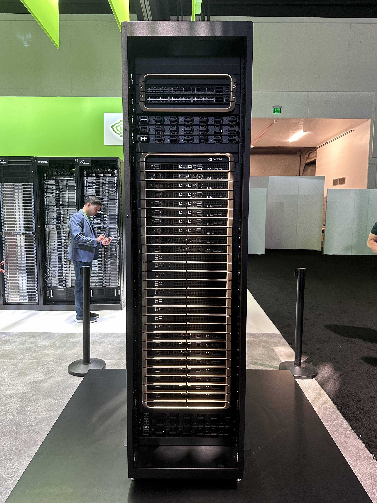

GB200 NVL72整机柜

核心特性
整机规格
整机柜设备，包含18个Compute tray、9个NVSwitch tray和6个电源tray。单机柜功耗120KW，提供36个Bianca超级芯片（每个含1个Grace CPU和2个B200 GPU）。
计算性能
• FP16算力：360 PFLOPS
• FP4推理：1,440 PFLOPS
• AI性能：1.4 exaFLOPS
• 相当于22.5台H100系统
• FP4推理：1,440 PFLOPS
• AI性能：1.4 exaFLOPS
• 相当于22.5台H100系统
互联架构
采用第五代NVLink技术，72个GPU全互联。每个B200芯片18个NVLink端口，每端口100GB/s带宽，每芯片总计1.8TB/s双向吞吐量。系统总带宽130TB/s。
内存规格
• GPU显存：13.5TB HBM3e
• 系统总内存：30.2TB
• 单GPU显存：192GB
• 显存带宽：8TB/s (单GPU)
• 系统总内存：30.2TB
• 单GPU显存：192GB
• 显存带宽：8TB/s (单GPU)
散热技术
标配冷板液冷系统，支持in-rack CDU和in-row CDU两种方案。高密度设计要求高效散热，in-row CDU可提供高达2000KW的制冷能力，满足集群需求。
电源系统
采用OCP ORv3 HPR标准，电源效率>97.5%。配置4+4(或4+2)个电源shelf，每个33KW，支持5+1冗余。
网络连接
每Compute tray：4个OSFP（400G）2个QSFP（100G）
系统扩展
可通过NVL576架构扩展至576颗GPU（8个集群节点），实现2,880 PFLOPS的FP16算力。